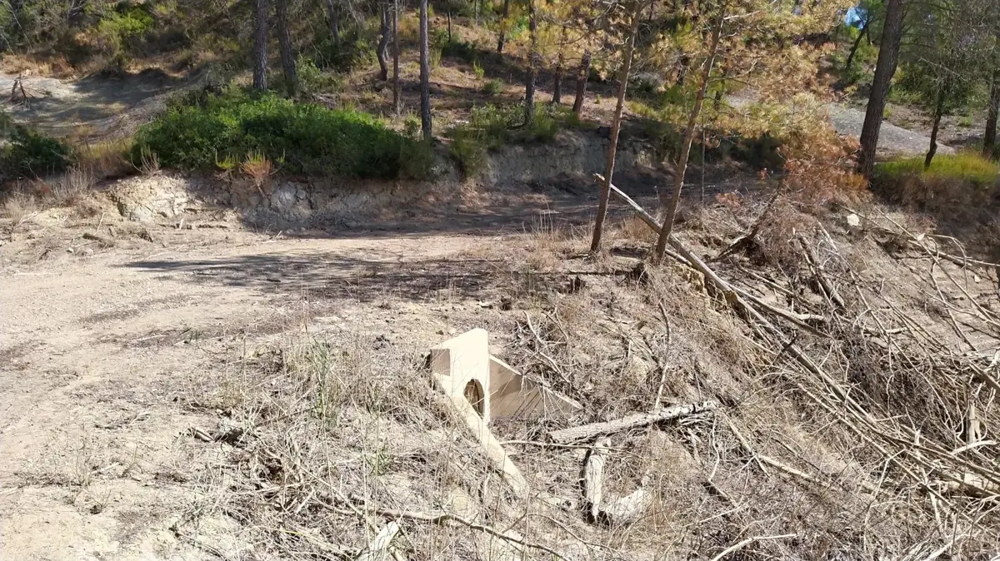
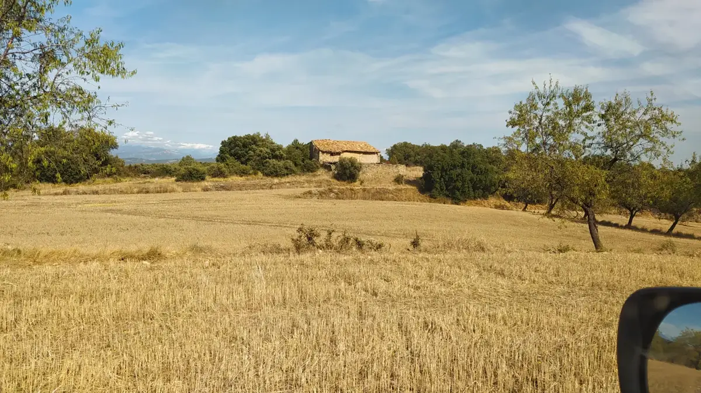

Desbroce de parcelas y fincas en Zaragoza
Limpiamos parcelas, solares y fincas de hierba seca y matorral. Así cumple con el ayuntamiento y reduce el riesgo de que un fuego llegue a su casa.
Por qué desbrozar
La hierba seca y el matorral arden con mucha facilidad en verano. Muchos ayuntamientos obligan a tener las parcelas limpias y pueden multar si no lo están. En las urbanizaciones junto al monte, una franja limpia alrededor de las casas es la mejor protección frente a un incendio.
Qué hacemos
- Desbroce de hierba y matorral, a mano o con la máquina que pida el terreno.
- Poda de las ramas bajas de los árboles, para que el fuego no suba a las copas.
- Franjas de protección alrededor de casas y vallas.
- Retirada o triturado de todos los restos.
Cuándo hacerlo
Lo mejor es desbrozar a finales de primavera, cuando la hierba ya ha crecido y antes de que se seque. En fincas grandes conviene repasar a finales de verano.



Preguntas frecuentes
¿Me pueden multar si no desbrozo?
Sí. Muchas ordenanzas municipales obligan a mantener limpios los solares y parcelas, sobre todo en verano.
¿Queman los restos?
No. Los retiramos o los trituramos y los dejamos en el terreno, que protege el suelo.
¿Trabajan en fincas grandes?
Sí. Díganos la superficie y le preparamos el presupuesto; en los bordes y junto a los árboles siempre se repasa a mano.
Otros servicios
Pídanos presupuesto
Cuéntenos qué necesita y dónde, y le preparamos un presupuesto sin compromiso. Si nos manda una foto, mejor.
Calle Riglos 9, 50012 Zaragoza (España)